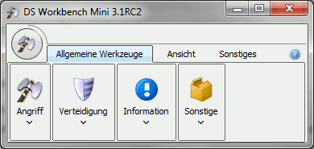

DS Workbench - Mini |
|
|  | |
| Seit Version 3.1 gibt es eine Mini Version von DS Workbench. Bei dieser abgespeckten Version wird keine Karte angezeigt und alle Kartenfeatures sind deaktiviert oder unsichtbar. DS Workbench Mini soll dazu dienen, geplanten Angriffe o.ä. abzuschicken, ohne die Systemressourcen durch ein laufendes, komplettes DS Workbench unnötig zu belasten. Die Mini Version kann unter Windows, sofern man den Installer verwendet und Shortcuts auf dem Desktop erzeugt hat, über einen entsprechenden Shortcut gestartet werden. Alternativ gibt es im DS Workbench Installationsverzeichnis eine Datei DSWorkbench-Mini.exe die dasselbe bewirkt. Linux und MacOS Benutzer finden im Installationsverzeichnis eine Datei dsworkbench-mini.sh, welche die Mini Version startet. |